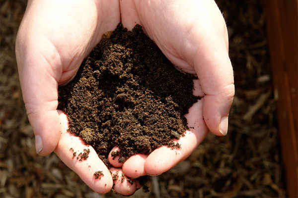
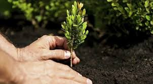

Composting and Organic Mulching
Organic waste decomposes in landfills that undergoes anaerobic decomposition by microorganisms that require oxygen. During this process, the biogas is created by a product that creates 50 percent of methane and carbon dioxide. Both of which are potent greenhouse gasses with methane being 28 to 36 times more effective than Carbon dioxide at trapping heat in the atmosphere. Composting will help to reduce waste that we generate such as garden waste and organic waste by allowing organic waste to degrade in soil without the presence of oxygen. No methane is produced. This also reduces the need for pesticides and chemical fertilizers by adding organic matter that causes soil particles to bind and form stable aggregates that improve soil structure that improves the soil health. Mulching reduces soil erosion and evaporation by maintaining soil temperature and moisture by covering the soil surface.
Plant more Trees/Reforestation
Trees play a vital role in an environment. Trees have multiple benefits such as filtering the air, maintaining the soil healthy, providing food, boosting biodiversity, and protecting and being home for birds and mammals. And trees can lessen some major causes of secondary disasters from typhoons. Trees can reduce floods, landslides and greenhouse gasses. By planting more trees, during a typhoon the trees will absorb the rainwater which lessens the possibility of flooding and the roots of the tree can make the soil strong and sturdy enough to not erode which lessens the possibility of landslides. Greenhouse gasses trap heat which can warm the ocean and increase the chances of forming a typhoon, One of the components of greenhouse gas is carbon dioxide, trees can absorb and store 48 pounds of carbon dioxide and convert it into oxygen through lessening its heat-trapping properties it also lessens the greenhouse effect hence decreases warming the ocean which prevents forming a typhoon.
Strong Infrastructure
Building strong infrastructure such as a better drainage system, and seawalls can help mitigate the damage of typhoons. Those infrastructures can help lessen flooding, which also helps reduce damage to surrounding buildings. This infrastructure should be regularly maintained, to ensure its effectiveness.
Convert into Renewable Energy
Renewable energy is energy derived from natural sources, renewable energy is safer, sustainable, cheaper and is surrounded. Renewable energy sources such as solar energy, wind energy, hydro energy, tidal energy, geothermal energy and biomass energy are considered everlasting unlike burning fossil fuels that emit harmful chemicals into the atmosphere.

Conserve Energy
Greenhouse gasses are one of the main reasons for forming Typhoons when ocean water warms and there are many ways to reduce greenhouse gasses like Saving energy at home, some ways to do it are by using LED lights instead of incandescent ones. LED lights use 90% less energy and last even longer than traditional incandescent lights. Turning off the lights in a room that you aren’t in is the easiest way to save electricity. Unplugging appliances that you don’t use much or you don’t use at all can save a lot of electricity, appliances can still consume energy when plugged in, this is called “Phantom power” This happens when devices are plugged in but you aren’t actively using it.